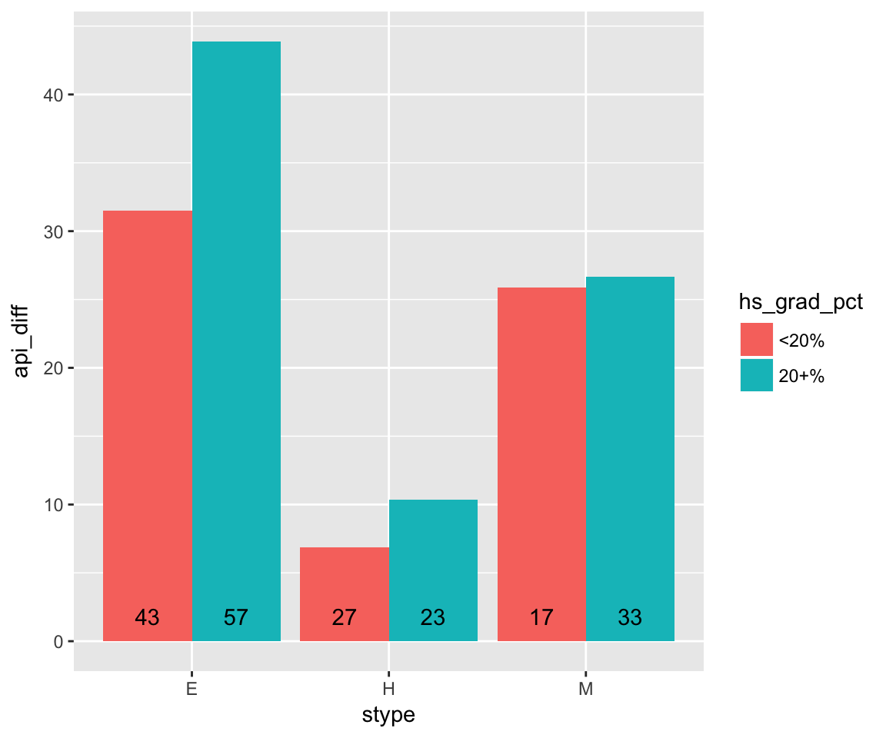
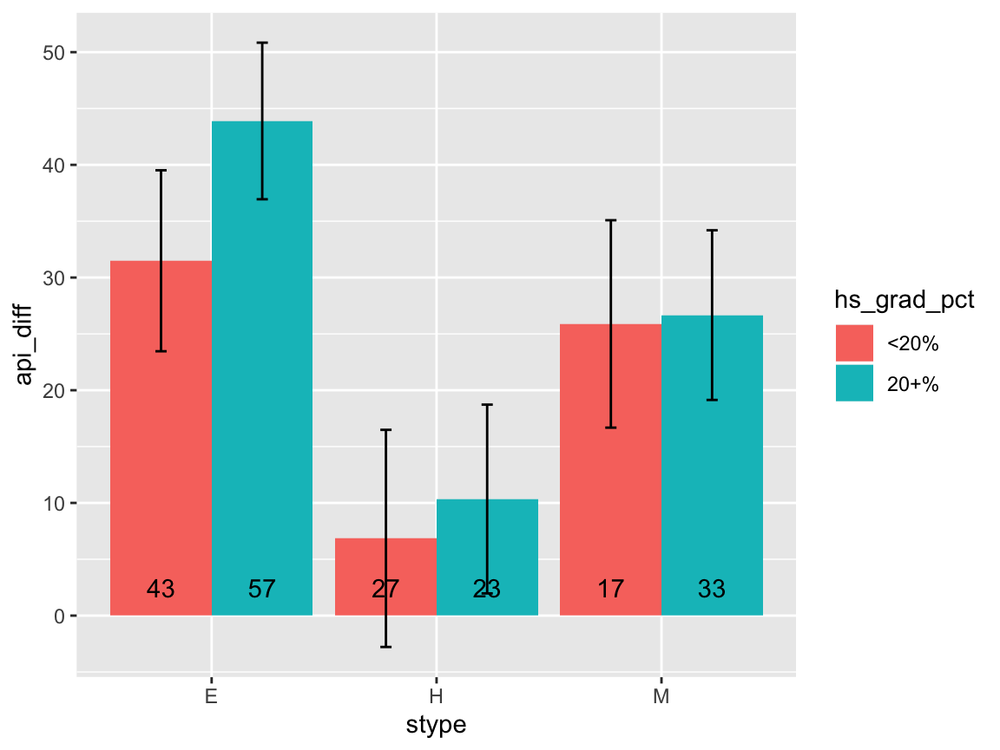

srvyr compared to the survey package
Greg Freedman
2019-01-19
Source:vignettes/srvyr-vs-survey.Rmd
srvyr-vs-survey.RmdThe srvyr package aims to add dplyr like syntax to the survey package. This vignette focuses on how srvyr compares to the survey package, for more information about survey design and analysis, check out the vignettes in the survey package, or Thomas Lumley’s book, Complex Surveys: A Guide to Analysis Using R.
Everything that srvyr can do, can also be done in survey. In fact, behind the scenes the survey package is doing all of the hard work for srvyr. srvyr strives to make your code simpler and more easily readable to you, especially if you are already used to the dplyr package.
Motivating example
The dplyr package has made it fast and easy to write code to summarize data. For example, if we wanted to check how the year-to-year change in academic progress indicator score varied by school level and percent of parents were high school graduates, we can do this:
library(survey)
library(ggplot2)
library(dplyr)
data(api)
out <- apistrat %>%
mutate(hs_grad_pct = cut(hsg, c(0, 20, 100), include.lowest = TRUE,
labels = c("<20%", "20+%"))) %>%
group_by(stype, hs_grad_pct) %>%
summarize(api_diff = weighted.mean(api00 - api99, pw),
n = n())
ggplot(data = out, aes(x = stype, y = api_diff, group = hs_grad_pct, fill = hs_grad_pct)) +
geom_bar(stat = "identity", position = "dodge") +
geom_text(aes(y = 0, label = n), position = position_dodge(width = 0.9), vjust = -1)
However, if we wanted to add error bars to the graph to capture the uncertainty due to sampling variation, we have to completely rewrite the dplyr code for the survey package. srvyr allows a more direct translation.
Preparing a survey dataset
as_survey_design(), as_survey_rep() and as_survey_twophase() are analagous to survey::svydesign(), survey::svrepdesign() and survey::twophase() respectively. Because they are designed to match dplyr’s style of non-standard evaluation, they accept bare column names instead of formulas (~). They also move the data argument first, so that it is easier to use magrittr pipes (%>%).
library(srvyr)
# simple random sample
srs_design_srvyr <- apisrs %>% as_survey_design(ids = 1, fpc = fpc)
srs_design_survey <- svydesign(ids = ~1, fpc = ~fpc, data = apisrs)The srvyr functions also accept dplyr::select()’s special selection functions (such as starts_with(), one_of(), etc.), so these functions are analagous:
# selecting variables to keep in the survey object (stratified example)
strat_design_srvyr <- apistrat %>%
as_survey_design(1, strata = stype, fpc = fpc, weight = pw,
variables = c(stype, starts_with("api")))
strat_design_survey <- svydesign(~1, strata = ~stype, fpc = ~fpc,
variables = ~stype + api99 + api00 + api.stu,
weight = ~pw, data = apistrat)The function as_survey() will automatically choose between the three as_survey_* functions based on the arguments, so you can save a few keystrokes.
# simple random sample (again)
srs_design_srvyr2 <- apisrs %>% as_survey(ids = 1, fpc = fpc)Data manipulation
Once you’ve set up your survey data, you can use dplyr verbs such as mutate(), select(), filter() and rename().
strat_design_srvyr <- strat_design_srvyr %>%
mutate(api_diff = api00 - api99) %>%
rename(api_students = api.stu)
strat_design_survey$variables$api_diff <- strat_design_survey$variables$api00 -
strat_design_survey$variables$api99
names(strat_design_survey$variables)[names(strat_design_survey$variables) == "api.stu"] <- "api_students"Note that arrange() is not available, because the srvyr object expects to stay in the same order. Nor are two-table verbs such as full_join(), bind_rows(), etc. available to srvyr objects either because they may have implications on the survey design. If you need to use these functions, you should use them earlier in your analysis pipeline, when the objects are still stored as data.frames.
Summary statistics
Of the entire population
srvyr also provides summarize() and several survey-specific functions that calculate summary statistics on numeric variables: survey_mean(), survey_total(), survey_quantile() and survey_ratio(). These functions differ from their counterparts in survey because they always return a data.frame in a consistent format. As such, they do not return the variance-covariance matrix, and so are not as flexible.
# Using srvyr
out <- strat_design_srvyr %>%
summarize(api_diff = survey_mean(api_diff, vartype = "ci"))
out## # A tibble: 1 x 3
## api_diff api_diff_low api_diff_upp
## <dbl> <dbl> <dbl>
## 1 32.9 28.8 36.9# Using survey
out <- svymean(~api_diff, strat_design_survey)
out## mean SE
## api_diff 32.893 2.0511confint(out)## 2.5 % 97.5 %
## api_diff 28.87241 36.91262By group
srvyr also allows you to calculate statistics on numeric variables by group, using group_by().
# Using srvyr
strat_design_srvyr %>%
group_by(stype) %>%
summarize(api_increase = survey_total(api_diff >= 0),
api_decrease = survey_total(api_diff < 0))## # A tibble: 3 x 5
## stype api_increase api_increase_se api_decrease api_decrease_se
## <fct> <dbl> <dbl> <dbl> <dbl>
## 1 E 4067. 119. 354. 119.
## 2 H 498. 49.4 257. 49.4
## 3 M 998. 19.9 20.4 19.9# Using survey
svyby(~api_diff >= 0, ~stype, strat_design_survey, svytotal)## stype api_diff >= 0FALSE api_diff >= 0TRUE se.api_diff >= 0FALSE
## E E 353.68 4067.32 119.17185
## H H 256.70 498.30 49.37208
## M M 20.36 997.64 19.85371
## se.api_diff >= 0TRUE
## E 119.17185
## H 49.37208
## M 19.85371Proportions by group
You can also calculate the proportion or count in each group of a factor or character variable by leaving x empty in survey_mean() or survey_total().
# Using srvyr
srs_design_srvyr %>%
group_by(awards) %>%
summarize(proportion = survey_mean(),
total = survey_total())## # A tibble: 2 x 5
## awards proportion proportion_se total total_se
## <fct> <dbl> <dbl> <dbl> <dbl>
## 1 No 0.38 0.0338 2354. 210.
## 2 Yes 0.62 0.0338 3840. 210.# Using survey
svymean(~awards, srs_design_survey)## mean SE
## awardsNo 0.38 0.0338
## awardsYes 0.62 0.0338svytotal(~awards, srs_design_survey)## total SE
## awardsNo 2353.7 209.65
## awardsYes 3840.3 209.65Unweighted calculations
Finally, the unweighted() function can act as an escape hatch to calculate unweighted calculations on the dataset.
# Using srvyr
strat_design_srvyr %>%
group_by(stype) %>%
summarize(n = unweighted(n()))## # A tibble: 3 x 2
## stype n
## <fct> <int>
## 1 E 100
## 2 H 50
## 3 M 50# Using survey
svyby(~api99, ~stype, strat_design_survey, unwtd.count)## stype counts se
## E E 100 0
## H H 50 0
## M M 50 0Back to the example
So now, we have all the tools needed to create the first graph and add error bounds. Notice that the data manipulation code is nearly identical to the dplyr code, with a little extra set up, and replacing weighted.mean() with survey_mean.
strat_design <- apistrat %>%
as_survey_design(strata = stype, fpc = fpc, weight = pw)
out <- strat_design %>%
mutate(hs_grad_pct = cut(hsg, c(0, 20, 100), include.lowest = TRUE,
labels = c("<20%", "20+%"))) %>%
group_by(stype, hs_grad_pct) %>%
summarize(api_diff = survey_mean(api00 - api99, vartype = "ci"),
n = unweighted(n()))
ggplot(data = out, aes(x = stype, y = api_diff, group = hs_grad_pct, fill = hs_grad_pct,
ymax = api_diff_upp, ymin = api_diff_low)) +
geom_bar(stat = "identity", position = "dodge") +
geom_errorbar(position = position_dodge(width = 0.9), width = 0.1) +
geom_text(aes(y = 0, label = n), position = position_dodge(width = 0.9), vjust = -1)
Grab Bag
Using survey functions on srvyr objects
Because srvyr objects are just survey objects with some extra structure, all of the functions from survey will still work with them. If you need to calculate something beyond simple summary statistics, you can use survey functions.
##
## Call:
## svyglm(formula = api00 ~ ell + meals + mobility, design = strat_design)
##
## Survey design:
## Called via srvyr
##
## Coefficients:
## Estimate Std. Error t value Pr(>|t|)
## (Intercept) 820.8873 10.0777 81.456 <2e-16 ***
## ell -0.4806 0.3920 -1.226 0.222
## meals -3.1415 0.2839 -11.064 <2e-16 ***
## mobility 0.2257 0.3932 0.574 0.567
## ---
## Signif. codes: 0 '***' 0.001 '**' 0.01 '*' 0.05 '.' 0.1 ' ' 1
##
## (Dispersion parameter for gaussian family taken to be 5171.966)
##
## Number of Fisher Scoring iterations: 2Standard evaluation
Srvyr now supports the standard evaluation conventions introduced in dplyr version 0.7 and rlang. If you’d like to use a function programmatically, you can use the functions from rlang like rlang::quo() or rlang::sym() to capture the expression and rlang::!! to unquote it. All of these functions are re-exported by srvyr, so you don’t need to load the rlang library to use them.
Here’s a quick example, but please see the dplyr vignette vignette("programming", package = "dplyr") for more details.
fpc_var <- sym("fpc")
srs_design_srvyr <- apisrs %>% as_survey_design(fpc = !!fpc_var)
grouping_var <- sym("stype")
api_diff <- quo(api00 - api99)
srs_design_srvyr %>%
group_by(!!grouping_var) %>%
summarize(
api_increase = survey_total((!!api_diff) >= 0),
api_decrease = survey_total((!!api_diff) < 0)
)## # A tibble: 3 x 5
## stype api_increase api_increase_se api_decrease api_decrease_se
## <fct> <dbl> <dbl> <dbl> <dbl>
## 1 E 4057. 205. 341. 98.5
## 2 H 557. 124. 217. 79.4
## 3 M 898. 152. 124. 60.5Srvyr will also follow dplyr’s lead on deprecating the old method of NSE, the so-called “underscore functions” (like summarize_). Currently, they have been soft-deprecated, but I expect them to be removed altogether in some future version of srvyr.
Scoped functions
Srvyr has also been able to take advantage of the new-ish dplyr “scoped” variants of the main manipulation functions like summarize_at(). These functions allow you to quickly calculate summary statistics for multiple variables. For example:
# Calculate survey mean for all variables that have names starting with "api"
strat_design %>%
summarize_at(vars(starts_with("api")), survey_mean)## # A tibble: 1 x 6
## api00 api00_se api99 api99_se api.stu api.stu_se
## <dbl> <dbl> <dbl> <dbl> <dbl> <dbl>
## 1 662. 9.41 629. 9.96 498. 16.1The dplyr documentation dplyr::scoped provides more details.